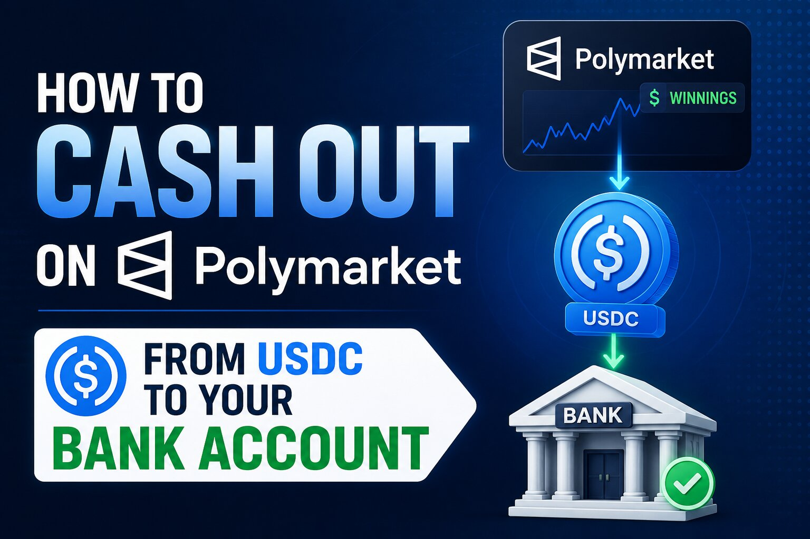

How to Cash Out on Polymarket: From USDC to Your Bank Account

The short answer
Polymarket doesn't hand you dollars — it hands you USDC, a dollar-pegged stablecoin, on the Polygon blockchain. Cashing out is really two separate steps stacked together: first, get your winnings out of Polymarket as USDC (fast, cheap, on-chain); second, turn that USDC into spendable currency in your bank account (a bit slower, usually through a crypto exchange). Polymarket US, the CFTC-regulated arm for verified American users, is the exception — it can send USD straight to a bank, no crypto conversion required.
Step one: redeem your winning position
Once a market resolves in your favor, you won't see cash automatically — you'll see a "Redeem" button on that market. Your winning shares are sitting as outcome tokens in your connected wallet until you claim them. Clicking Redeem triggers an on-chain transaction that burns those tokens and credits your wallet with USDC at a straightforward 1-to-1 rate: one winning share becomes $1 of USDC. This step costs a small amount of gas on Polygon, typically a fraction of a cent, and you can queue up redemptions from several resolved markets back to back in one sitting if you've got winners across multiple positions.
Step two: withdraw the USDC off the platform
With your balance sitting as spendable USDC, open your profile and click Withdraw. As of Polymarket's April 2026 update, your trading balance is technically held as pUSD, a wrapped version of USDC — when you withdraw, Polymarket automatically converts it back to standard USDC on the way out, so you don't need to think about this unless you're troubleshooting a discrepancy. Enter the destination address, double-check the first and last several characters against your wallet (transfers on Polygon cannot be reversed once confirmed, so a mistyped address means the funds are simply gone), select Polygon as the receiving network, and confirm. Funds typically land in your destination wallet within a couple of minutes. Only your free, unlocked balance is eligible — anything still tied up in an open position has to be sold or resolved first.
Getting the network right is the part that actually matters
The single most common expensive mistake here is selecting the wrong blockchain network — pasting a Polygon withdrawal into an exchange deposit address configured for Ethereum mainnet, for example. Wrong-network transfers are the leading cause of people describing "lost" Polymarket funds, and they're not recoverable through Polymarket support since the transaction itself completed correctly on-chain, just to a network the receiving side wasn't watching. Before you send anything meaningful, it's worth sending a small test amount — five to twenty dollars — through the full path first to confirm everything lines up.
Step three: turning USDC into dollars in your bank
Polymarket itself has no direct fiat off-ramp on the global platform, so getting to a bank account means routing through somewhere that accepts crypto and pays out cash. The cheapest, most common route: withdraw USDC from Polymarket directly to a centralized exchange account — Coinbase, Kraken, Binance, and similar all now accept USDC deposits on the Polygon network without requiring a bridge first. Once it lands, usually within five to fifteen minutes, sell the USDC for dollars and initiate a standard ACH withdrawal to your linked bank, which typically takes one to three business days, or pay for a same-day wire if the amount justifies it. Total network cost on this path is normally well under a dollar; the only real cost is the few days you wait for the exchange's own bank transfer to clear.
For smaller or more occasional cash-outs, some users go through a fiat off-ramp service like MoonPay directly from a self-custody wallet instead of routing through an exchange. It's faster to set up the first time but noticeably more expensive — off-ramp providers typically charge somewhere in the 1.5% to 5% range over the market rate, on top of payout processing fees, versus the near-zero cost of an exchange route. It's a reasonable tradeoff for a small, one-off withdrawal; it adds up fast on anything sizable.
If you're using Polymarket US instead of the global platform
American users verified through Polymarket US — the CFTC-regulated arm run through the QCX LLC subsidiary — skip the crypto conversion step entirely. That platform settles in US dollars through standard bank rails like ACH, debit, and wire, the same way Kalshi does, specifically because it's built for KYC-verified US residents rather than the crypto-native global audience. If you're not sure which version of Polymarket you're using, check whether your account required a Social Security number and ID verification at signup — if it did, you're almost certainly on the US platform and your withdrawal will look and feel like a normal bank transfer.
What it actually costs, put together
Polymarket doesn't charge a withdrawal fee on either version of the platform. On the global platform, your real costs are Polygon gas (typically a few cents), a small amount of slippage converting pUSD to USDC on the way out (commonly a fraction of a percent), and whatever your chosen off-ramp charges to turn USDC into dollars — effectively nothing through a major exchange, or several percent through a convenience-focused fiat off-ramp. On Polymarket US, the flow is closer to Kalshi's: no crypto fees at all, just the normal bank-transfer economics of ACH or wire.
Before you withdraw: the two things that trip people up
First, only your free cash balance is withdrawable — money in open positions is locked until the position is sold or the market resolves, so check your portfolio's "available to trade" figure rather than your total account value. Second, verify you're using Polygon and not Ethereum mainnet at every step of the chain: on Polymarket's withdrawal screen, on your destination wallet, and on your exchange's deposit address selector. Get those two things right and the rest of the process is close to instant.
Disclaimer: This post is for informational purposes only and is not financial, legal, or tax advice. Cryptocurrency withdrawals are irreversible once confirmed on-chain — always send a small test transaction first and verify network and address details carefully. Fees, supported exchanges, and platform features can change; confirm current details on polymarket.com before withdrawing. Consult a tax professional about how your specific gains should be reported.